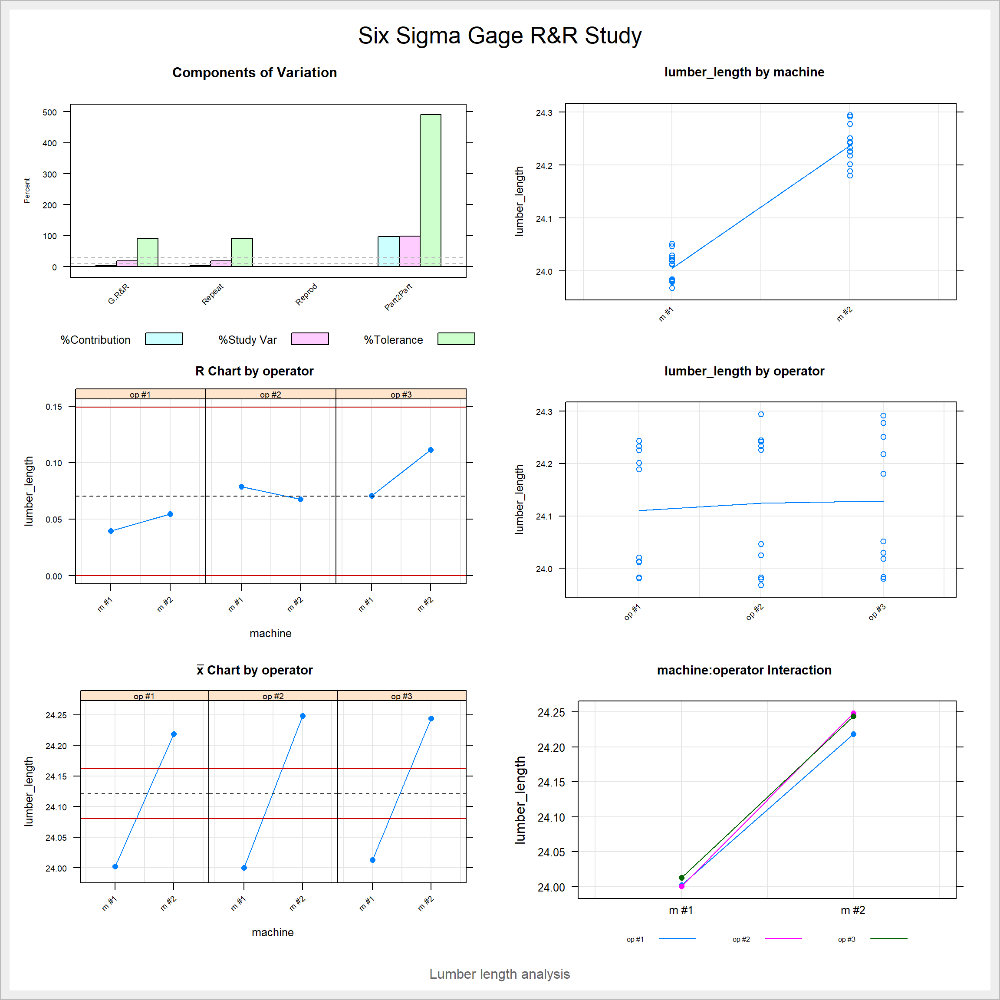
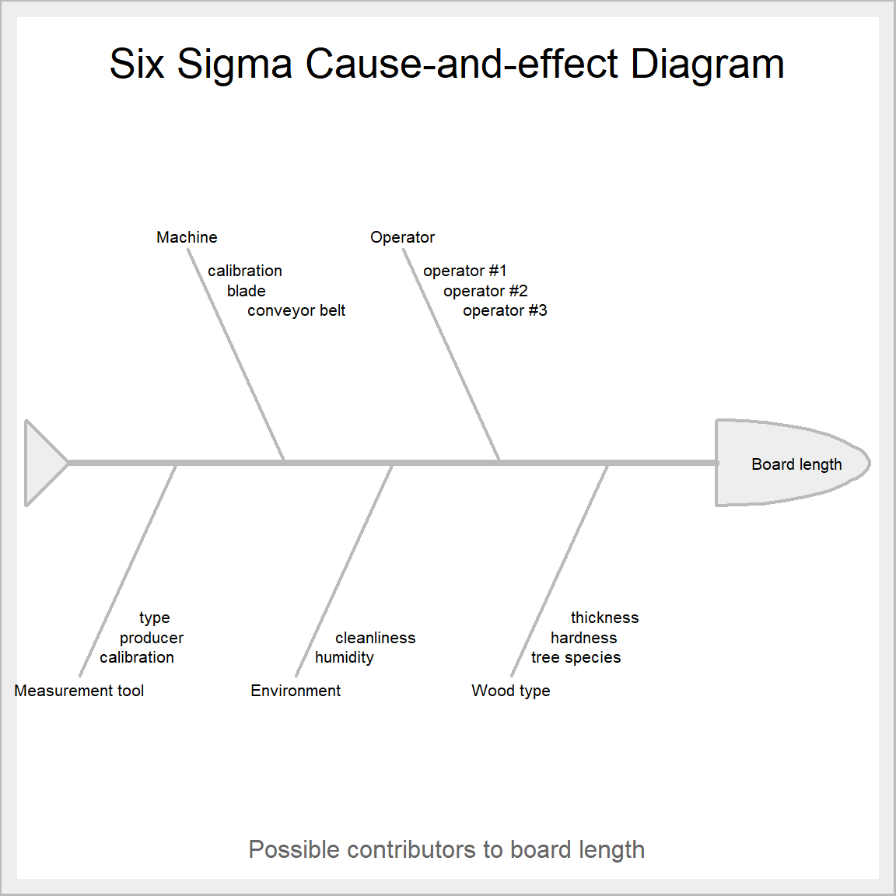

library(SixSigma)
library(tidyverse)Six Sigma tools in R
Six Sigma
process improvement
R
Improving processes with the help of R
Six Sigma (\(6 \sigma\)) is an umbrella term for a set of tools and techniques, which can be used for improving existing processes for example in the manufacturing industry. There are many commercial software packages which offer Six Sigma related statistical quality control tools for analyzing data. Recently I bumped into the Six Sigma R package, which provides a convenient open source alternative. Let’s take a look at a few functions supplied by this package.
Methodology for improving an existing process
Six Sigma projects often revolve around the DMAIC methodology, which stands for Define, Measure, Analyze, Improve, and Control. These five stages are integral to a Six Sigma project which aims at improving an existing process. Each stage contains a specific set of tools which are used for improving the overall quality.
Let’s assume that we have defined our project aim as improving the reproducibility of a sawmill production process, where we produce lumber with two different machines which are run by three different machine operators. The SixSigma package provides a bunch of handy tools for analyzing the situation. We will take a closer look at the Gage R&R method and the Ishikawa or fishbone diagrams for measuring and analyzing the project data. Let’s start by loading the needed packages.
Creating mock data
Before we can analyze anything, we need to create some mock data. Let’s assume that the target of the sawmill cutting process is to produce 24 feet long pieces of lumber. In our imaginary situation, we have the three operators cut 5 pieces of lumber per machine, which we then measure to analyze the consistency of the length of lumber produced.
set.seed(123)
machines <- c("m #1", "m #2")
operators <- c("op #1", "op #2", "op #3")
runs <- c("run #1", "run #2", "run #3", "run #4", "run #5")
# create basic measurement grid
lumber_df <- expand.grid("machine" = factor(x = machines, levels = machines),
"operator" = factor(x = operators, operators),
"run" = factor(x = runs, levels = runs))
# generate measurement data
lumber_df$lumber_length <- rnorm(n = length(lumber_df$machine), mean = 24, sd = 0.03)
# let's create some differences
lumber_df <- lumber_df |>
mutate(
lumber_length = case_when(
# machine 2 creates slightly longer products
machine == "m #2" ~ lumber_length + lumber_length * 0.01,
# operator 3 has slighty more variation in the outcomes
operator == "op #3" ~ lumber_length + rnorm(n = 1, mean = 0, sd = 0.035),
# keep other values as is
TRUE ~ lumber_length
)
)
head(lumber_df) machine operator run lumber_length
1 m #1 op #1 run #1 23.98319
2 m #2 op #1 run #1 24.23303
3 m #1 op #2 run #1 24.04676
4 m #2 op #2 run #1 24.24214
5 m #1 op #3 run #1 24.01880
6 m #2 op #3 run #1 24.29197Using Gage R&R
Gage R&R is used to evaluate the repeatability and reproducibility of the lumber cutting process. It helps us measure the performance of the machines and operators. For example, we can determine how much of the variation in the lumber length is due to the sawing machines itself, and how much is due to the actual process variation. The SixSigma package provides us with a convenient function ss.rr() for performing the analysis. Let’s imagine that we wish to keep the lumber within 0.1 feet from the target value. Figure 1 shows the visualization of the Gage R&R results.
ss.rr(var = lumber_length, machine, operator, data = lumber_df,
sub = "Lumber length analysis",
alphaLim = 0.05,
errorTerm = "interaction",
lsl = 24 - 0.1,
usl = 24 + 0.1,
method = "crossed")Complete model (with interaction):
Df Sum Sq Mean Sq F value Pr(>F)
machine 1 0.4022 0.4022 651.851 0.00153
operator 2 0.0018 0.0009 1.451 0.40802
machine:operator 2 0.0012 0.0006 0.651 0.53032
Repeatability 24 0.0227 0.0009
Total 29 0.4279
alpha for removing interaction: 0.05
Reduced model (without interaction):
Df Sum Sq Mean Sq F value Pr(>F)
machine 1 0.4022 0.4022 436.277 <2e-16
operator 2 0.0018 0.0009 0.971 0.392
Repeatability 26 0.0240 0.0009
Total 29 0.4279
Gage R&R
VarComp %Contrib
Total Gage R&R 0.0009218159 3.33
Repeatability 0.0009218159 3.33
Reproducibility 0.0000000000 0.00
operator 0.0000000000 0.00
Part-To-Part 0.0267496612 96.67
Total Variation 0.0276714771 100.00
VarComp StdDev StudyVar %StudyVar %Tolerance
Total Gage R&R 0.0009218159 0.03036142 0.1821685 18.25 91.08
Repeatability 0.0009218159 0.03036142 0.1821685 18.25 91.08
Reproducibility 0.0000000000 0.00000000 0.0000000 0.00 0.00
operator 0.0000000000 0.00000000 0.0000000 0.00 0.00
Part-To-Part 0.0267496612 0.16355324 0.9813194 98.32 490.66
Total Variation 0.0276714771 0.16634746 0.9980848 100.00 499.04
Number of Distinct Categories = 7 
We can see that the function spits out a bunch of statistical results and a fairly nice looking visualization of the main results. Our main takeaway from the outputs is that machine #2 has a statistically significant effect on the length of the boards. Otherwise, it seems that the operators do not have a noticeable impact on the process outcome, which is an indicator of a robust production process.
Analyzing the potential contributors to lumber_length
The fishbone or Ishikawa diagram can be used to write down and organize the possible causes for the performance differences between the machines and operators. In this case, the difference between the machines was quite obvious. However, we might assume that other factors such as the operators, the type of wood used in cutting, the tool used for measuring the lengths of the boards, and possibly the environment we work in also play a role in the outcome. The fishbone diagram is a convenient graph for visualizing this type of data. We can plot the contributors by using the ss.ceDiag() function.
Figure 2 shows the results of our brainstorming session. We now have a list of possible contributors to the process, which can help us plan the project further.
effect <- "Board length"
causes.gr <- c("Machine", "Operator", "Wood type", "Environment", "Measurement tool")
causes <- vector(mode = "list", length = length(causes.gr))
# possible contributors for different groups
# machine
causes[1] <- list(c("calibration", "blade", "conveyor belt"))
# operator
causes[2] <- list(c("operator #1", "operator #2", "operator #3"))
# wood type
causes[3] <- list(c("tree species", "hardness", "thickness"))
# environment
causes[4] <- list(c("humidity", "cleanliness"))
# measurement tool
causes[5] <- list(c("calibration", "producer", "type"))
ss.ceDiag(effect, causes.gr, causes, sub = "Possible contributors to board length")
Final thoughts
The SixSigma package provides an open source alternative for common statistical and project planning tools used in the DMAIC methodology. The functions are well documented and easy to use. Furthermore, the plots provided by the package functions seem nice enough to include directly in reports. Give the package a go if you need to improve processes in a Six Sigma fashion.